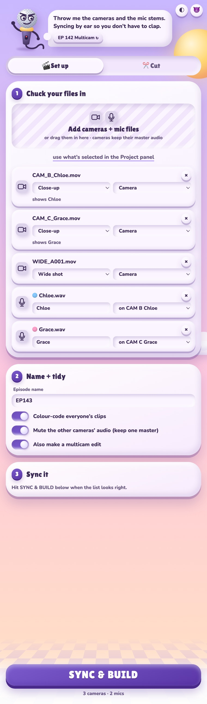
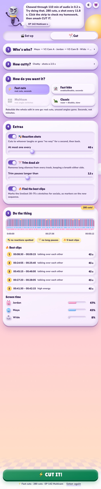
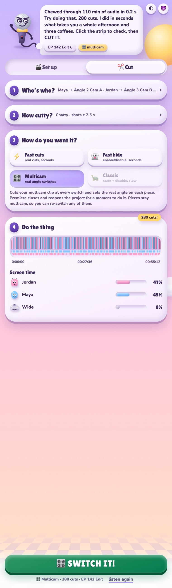
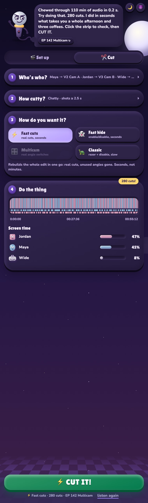

Multicam podcast edits that cut themselves.
Drop in your cameras and mics. Arrow Switch syncs them, listens to who's talking, and cuts to their camera, with the wide shot for cross-talk. An hour-long episode takes seconds. It's run by a talking microphone, and it will be rude to you.
Arrow Switch lives in a panel inside Premiere. It works on a copy of your sequence, so your original is never touched.
Cameras and mics line up by their audio, land in a bin, and get colour-labelled per person. It works out which mic goes with which camera from the file names.
It listens to every mic and cuts to that person's camera. Cross-talk and long monologues go to the wide shot.
On multicam sequences it sets the real angle on every cut, so you can still re-switch any shot by hand afterwards.
A quick cut to whoever laughs or goes "no way" while someone else is talking, then straight back. You decide how often.
Takes out silences longer than you set, keeping a breath either side. Nobody's words get trimmed.
Flags the liveliest 30 to 75 second stretches and drops markers on them, ready for socials.




Hover a screenshot to scroll through the whole panel.
No password, no System Settings, no dragging things into folders.
Hit the download button. You get Arrow-Switch-1.6.0.dmg in your Downloads folder.
Double-click the .dmg. A window opens with two things in it: the installer, and a folder called Everything else.
Press the big INSTALL IT! button. If Premiere is open, the installer offers to quit it for you first. It takes a few seconds.
Start Premiere Pro, then go to Window → Extensions → Arrow Switch. Dock the panel wherever you like.
This downloads and installs the latest version for your user. Same result, no clicking.
Open the disk image's Everything else folder and take Arrow Switch.zxp. Install it with a ZXP installer such as aescripts ZXP Installer, then put ffmpeg.exe in the extension's bin folder.
Two tabs, one after the other. ⌘ Enter always does the next step.
Yes. The disk image, the installer app and the package are all signed with an Apple Developer ID and notarised by Apple, so macOS opens them without a warning. The code is open source on GitHub.
No. Arrow Switch saves your project first and always builds a new sequence called <your sequence> – Arrow Switch. Your original sequence is never changed.
The Multicam mode briefly closes and reopens your project to set the angles. It keeps a backup copy in ~/Library/Caches/Arrow Switch/project-backups first.
Premiere Pro 2022 (version 22) and newer. The installer app needs macOS 13 Ventura or newer.
Arrow Switch never cuts to a camera that has no footage at that moment. Those shots go to the wide, or to whichever camera is rolling.
It's got opinions. If a client is watching over your shoulder, flip the tone button in the top right to nice.
It shouldn't. Install Arrow Switch installs for your user only and never asks. The .pkg in the Everything else folder installs for everyone on the Mac, so that one does ask.
Download the new version and run the installer again. It replaces the old panel, and the button says UPDATE IT! instead.
Open the disk image's Everything else folder and double-click Uninstall Arrow Switch.command.